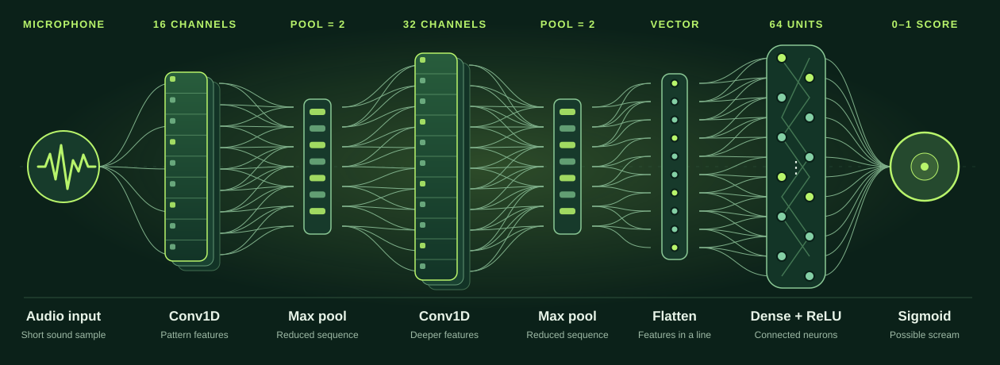

01 / CONNECT
Build the mesh
ESP32 nodes form a distributed network around an area, sharing observations from different positions.
MULTIPLE VANTAGE POINTSThe interactive room preview is unavailable on this device.
Click and drag on the scene below to explore an illustrative room-scale sensing model.
When every second counts, knowing where people might be can change the response. [PROJECT NAME] explores a mesh network of ESP32 devices that uses Wi-Fi signal changes to help reveal human presence inside a space.
Smoke, debris, darkness, and unfamiliar layouts can make it difficult for responders to locate people quickly. We are exploring a new layer of situational awareness from signals already capable of moving through a room.
A clue for responders. A path toward faster decisions. A technology being tested with care.
Wi-Fi signals change as they travel through a space. By studying those changes across multiple points, our prototype aims to estimate where human presence may be.
ESP32 nodes form a distributed network around an area, sharing observations from different positions.
MULTIPLE VANTAGE POINTSChannel state information, or CSI, describes how a Wi-Fi signal changes between devices. Movement and people can affect that pattern.
WI-FI CHANNEL STATE INFORMATIONSoftware combines readings into an estimated presence map that a responder could use alongside other information.
ESTIMATED, NOT CERTAINMicrophones in the nodes can capture short audio samples. A machine learning model examines the sound pattern and estimates whether it resembles a human scream, giving responders another potential clue to investigate.

Try an illustrative room scenario to see how a presence map could communicate a potential area of interest.
Choose a scene to explore how detected signal activity might appear to a response team.
A signal pattern suggests possible presence in Zone B. Responders would verify on site.
The same sensing idea has different tradeoffs depending on when and where nodes are placed. Both paths need field testing.
Fixed nodes could provide known coverage and repeatable placement in buildings equipped ahead of an incident.
Responders might position temporary nodes, potentially with drones, when a building has no installed system.
Any future system should support responders with evidence, uncertainty, and context. It should never replace a physical search or safety procedure.
This is a hackathon prototype. A promising room visualization is only a starting point for a tool that could influence a real response.
Measure how walls, furniture, interference, and multiple people affect position estimates.
Test node spacing and placement, especially when a weak reading might hide a person.
Show uncertainty clearly, avoid identifying people, and keep responders in control of decisions.
We’re building [PROJECT NAME] at ShellHacks 2026. Follow the prototype as it takes shape.
Explore the project on GitHub